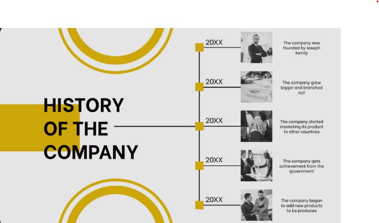
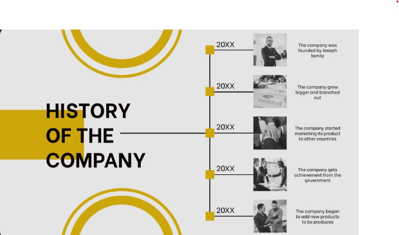
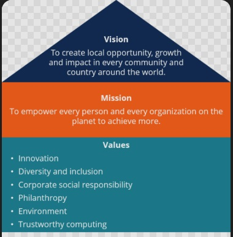

History of TechCon
TechCon was founded in 2010 with the mission of bringing together technology enthusiasts, developers, and innovators. Over the years, it has grown into one of the leading tech conferences globally
TechCon was founded in 2010 with the mission of bringing together technology enthusiasts, developers, and innovators. Over the years, it has grown into one of the leading tech conferences globally
Our mission is to foster collaboration, innovation, and learning in the tech community. We strive to provide opportunities for networking, education, and inspiration.

Jane Doe is a leading AI researcher who has contributed groundbreaking work in machine learning. She spoke at TechCon 2019 about the future of AI in everyday life.
John Smith, a renowned software engineer, shared insights into scalable cloud architecture at TechCon 2020, inspiring developers worldwide.